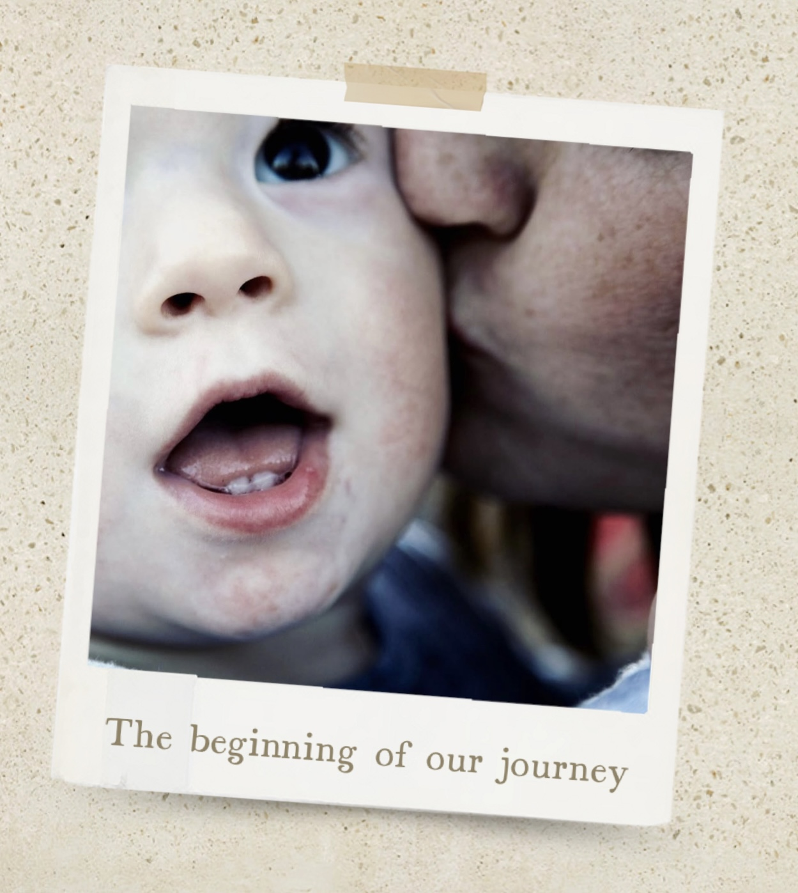

A diagnosis like SETD5 Syndrome arrives with a lot of questions. Even with a great care team, it can take time to find resources written for families rather than specialists. I built this site as a parent who has sat in that waiting room and pieced things together slowly over time. Everything here is what I've gathered for my own family, offered freely to yours. Below you'll find the full story, what the site includes, and a few important things to keep in mind as you use it.
Why This Site Exists
My son was diagnosed with SETD5 Syndrome at age 11, after years of appointments, testing, and waiting. When the diagnosis finally came, it was a relief to finally have a name for what we'd been navigating, but SETD5 Syndrome is rare enough that there wasn't an easy, ready-made roadmap for us.
I found myself searching on my own, reading research papers written in technical language, piecing together information from genetics journals and parent forums.
So I built this site to gather everything I wished I'd had, all in one place. The information is out there, but it's scattered. I wanted to bring it together somewhere accessible.
Above all, this site is for families like ours. I hope it helps.
— Kate

What You'll Find Here
This site provides:
- Plain-language explanations of SETD5 Syndrome and what it means for daily life
- Summaries of published research written in accessible language
- Practical resources for families: handouts, appointment guides, IEP guidance, and more
- A medical terms glossary and acronym reference
- Guidance for navigating information after a diagnosis
Everything is organized to be useful whether you're a parent, educator, medical professional, or someone else in the SETD5 Syndrome community, and shaped with input from families who understand what this journey actually looks like.
What This Site Is Not
This site is not a replacement for professional guidance from a physician, attorney, or educator. It is a starting point: a way to help families orient themselves before and between appointments. When something here conflicts with what your child's doctor, attorney, or school team tells you, please follow them.
How Information Is Collected
Content on this site is drawn from publicly available published research on SETD5 Syndrome. Papers are located through PubMed, Google Scholar, scientific journals, and websites. All content is written and reviewed by the site's author. Claude by Anthropic is used as a tool to help rephrase existing technical language into clearer language; it is not used for generating original medical analysis or research interpretation. Everything published here has been written and reviewed by the site's author.
A full list of sources is available on the Sources & References page. Content is updated as new research is published. If you notice something that should be corrected or updated, please submit a correction.
Contact
Questions or corrections? If you notice an error or have a suggestion for improving the site, please reach out. Community input is what makes a resource like this better over time.
Send a suggestion or correction →You can also reach us directly at info@setd5syndrome.live.